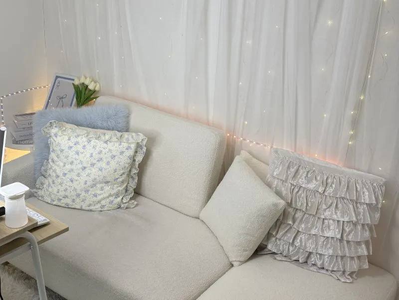

01
おうちで、自分のペース。
在宅でお仕事
移動時間をかけず、自宅から。生活のリズムに合わせて働きたい方に。
必要な機器・通信環境・配信場所は、事前に確認しましょう。
水戸・茨城のチャットレディ求人
在宅でも、通勤でも。
自分のペースで、
毎日にちょっとプラスしよう。
水戸エリアを中心に、茨城県全域から相談OK
「どんなお仕事？」の質問からで大丈夫。
LINE気軽に相談してみる水戸プラスのLINE窓口へ›応募対象：18歳以上。詳しい募集条件はご相談ください。ABOUT MITO PLUS
いつもの場所から。新しい場所から。
あなたの「はじめたい」を、一歩ずつ。
水戸プラスは、水戸エリアを中心に茨城県全域からご相談いただけるチャットレディの求人窓口です。通勤・在宅から、生活に合う働き方を選べます。
チャットレディは、パソコンやスマートフォンを通してオンラインでコミュニケーションを取るお仕事。仕事内容や報酬の仕組みを確認してから、自分に合うスタートを考えましょう。
YOUR WORK STYLE
おうちで、自分のペース。
移動時間をかけず、自宅から。生活のリズムに合わせて働きたい方に。
必要な機器・通信環境・配信場所は、事前に確認しましょう。

02気持ちを切り替えて、集中。
お仕事とプライベートを分けたい方に。配信する環境を整えて始めたい方もご相談ください。
通勤場所や利用できる設備の詳細は、相談時にご案内します。
REWARD
報酬の計算方法や支払い条件は、利用するサービスやお仕事の内容によって異なります。希望する働き方と合わせて、具体的な条件を確認しましょう。
収入は稼働時間や利用状況などにより異なり、一定額を保証するものではありません。
FIRST STEP
「私にもできる？」
その疑問から、ご相談ください。
利用サービスや会話の形式、映像・音声の利用など、対応する内容を確認できます。
プロフィールの公開範囲、顔出しの条件、記録・録画への対応を事前に確認しましょう。
通勤・在宅の希望や、働ける曜日・時間帯をお聞かせください。
ひとりで悩まず、まずは聞いてみよう。
LINEお仕事について相談する水戸プラスのLINE窓口へ›HOW TO START
「お仕事について知りたい」と送るだけ。通勤・在宅の希望があれば、合わせてお知らせください。
報酬、働く時間、必要な準備などをご案内。気になることは、このタイミングで確認しましょう。
必要書類や登録方法を確認し、準備を進めます。開始時期は相談時にご確認ください。
Q & A
はい。まずは仕事内容を知るところからご相談ください。必要な準備や登録までの手続きを確認できます。
はい。ひたちなか・日立・笠間・土浦・つくばなど、茨城県全域からご相談いただけます。
生活スタイルや配信環境に合わせてご相談いただけます。希望の時間帯や、ご自宅の通信環境などをお知らせください。
日払いに対応しています。受取方法や手続き、適用条件などは相談時にご確認ください。
応募条件は18歳以上です。詳しい募集条件や本人確認に必要な書類は相談時にご案内します。
HELLO, MY NEW STYLE.
はじめる前の、小さな疑問も。
まずは水戸プラスにご相談ください。